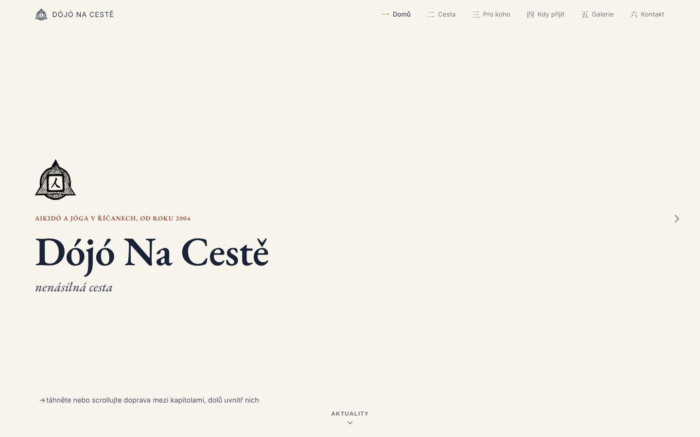
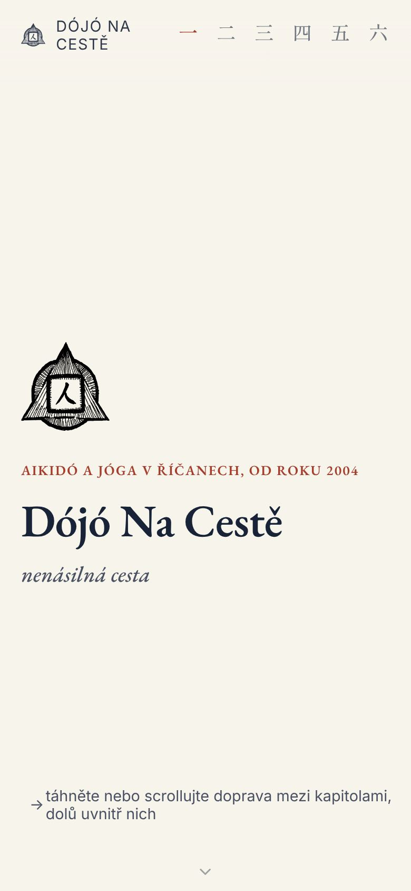
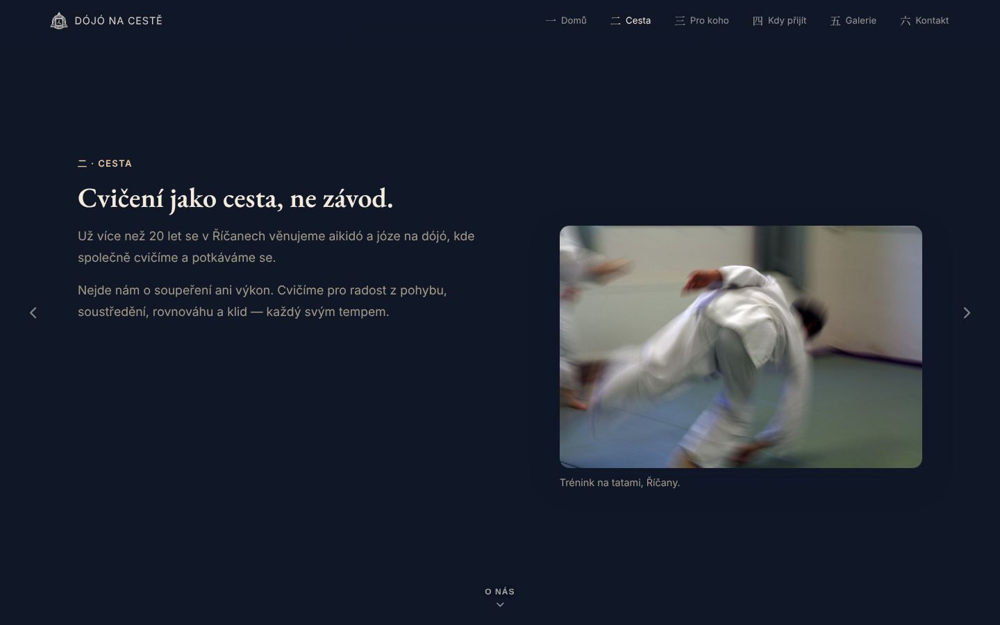

Rychlý web, který je vidět.
Bez měsíčního předplatného.
Platíte každý rok za Wix nebo Webnode a web je stejně pomalý a na Googlu ho nikdo nenajde? Převedu ho na vlastní rychlý web. Hosting vás nebude stát nic a stránky budou dohledatelné na Googlu i na Seznamu.
Tři věci, které malé firmě ušetří peníze i čas
Přechod z Wixu a Webnode
Přenesu obsah, fotky i staré články, přesměruji staré odkazy a převedu doménu. Pak můžete předplatné zrušit.
- nic se neztratí, ani staré příspěvky
- staré odkazy dál fungují
- web je váš, ne pronajatý
Nový web na míru
Jednoduchý, rychlý a hezký na mobilu. Rozvrh, ceník, galerie, kontakt s mapou. Co potřebujete, nic navíc.
- rychlé načítání i na mobilních datech
- vyhledávače (Google, Seznam) nastavené
- návštěvnost bez otravných cookie lišt
Automatizace drobné práce
Opakujete každý týden to samé? Odpovědi na e-maily, přihlášky do tabulky, faktury, připomínky. Nastavím, aby se to dělo samo.
- přihlášky a objednávky rovnou do tabulky
- automatické potvrzení a připomínky
- třídění e-mailů a dokumentů pomocí AI



Dójó Na Cestě: z Wixu na vlastní web
Aikidó a jóga v Říčanech, od roku 2004. Původní web běžel na Wixu a velká část historie z let před ním se ztratila.
Předtím
- Wix s ročním předplatným
- ztracené staré příspěvky
- web pronajatý, ne vlastní
Teď
- hosting zdarma
- kronika obnovená až do roku 2003
- Google i Seznam nastavené
Staré příspěvky jsem dohledal v internetovém archivu a vrátil je na web. K tomu galerie s více než 160 fotkami, popisky obrázků pro vyhledávače, přesměrování starých odkazů z Wixu a statistiky návštěvnosti bez cookies.
Prohlédnout web →Jednoduše a bez překvapení
Krátký hovor
Řeknete mi, co web má umět. Projdu ten současný a řeknu vám, co se dá zlepšit.
Pevná cena
Dostanete cenu předem a za ni web dodám. Žádné hodiny navíc.
Návrh a úpravy
Ukážu vám rozpracovaný web na odkazu. Připomínky zapracuji.
Spuštění
Převedu doménu, nastavím vyhledávače a ukážu vám, jak měnit texty.
Orientační ceny
Přechod z Wixu / Webnode
Přenos obsahu, nový vzhled, přesměrování, doména a vyhledávače.
Nový web
Web pro studio, řemeslníka nebo provozovnu, s rozvrhem, ceníkem, galerií a kontaktem.
Automatizace
Jedna konkrétní věc, která se teď dělá ručně.
Hosting na GitHub Pages je zdarma, platíte jen doménu (pár set korun ročně) přímo registrátorovi. Drobné úpravy po spuštění podle dohody.
Kryštof Skala
Pracuju ve vývoji her a ve volném čase stavím weby a aplikace pro rodinu, kamarády a místní spolky. Například vlastní hudební aplikaci, kterou denně používá moje rodina.
Při práci naplno využívám nástroje umělé inteligence. Díky tomu dodám rychle a za cenu, která dává smysl i pro malou firmu. Za výsledek ručím já: každý web osobně projdu na počítači i na mobilu.
V okolí Říčan se klidně potkáme osobně.
Pošlete mi odkaz na svůj web
Do pár dní vám zdarma napíšu, co bych na něm zlepšil a kolik by to stálo. Bez závazků.
KONTAKT@DOPLNIT